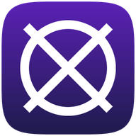

Windows
Windows 10 and 11 (64-bit)
Installer (.exe) Portable version, no install
Soro XAn AI assistant for meetings and interviews that runs on your own computer, with your own AI key.
Transcribes the conversation and suggests what to say next, in an overlay on your screen.
Upload your CV and a job description. Answers, cover letters and Role Insight use your real experience.
A research brief on the company you're meeting: culture, interviews, salary ranges and news.
Works with Gemini, OpenAI, Claude, Groq or a free local model via Ollama. No account needed.
Windows 10 and 11 (64-bit)
Installer (.exe) Portable version, no installmacOS, Apple Silicon or Intel
Apple Silicon (M1–M4) IntelNot sure? Apple menu → About This Mac: "Chip: Apple M…" means Apple Silicon.
Companion app, pairs with your computer
Download APKOpen the file on the tablet and allow "Install unknown apps" when asked.
Companion app, pairs with your computer
Download .ipa (unsigned)iPadOS only installs signed apps: sign it with your Apple ID using AltStore or Sideloadly, or build it in Xcode from the source.
All files: GitHub releases.
The installers are not code-signed yet, so your computer warns you the first time.
Settings → AI Providers → Cloud Providers: paste a key into one of these and click Save. One is enough.
Optional: a speech key (e.g. Deepgram) under Settings → Audio for live transcription, and a Tavily key under Profile Intelligence for live company research. Prefer free and offline? Install Ollama and pick its model instead.
Open Profile Intelligence → Use Soro X profile engine, upload your CV (and a job description), then in Modes switch to Looking for work.
The tablet app is a companion: Soro X keeps running on your computer and the tablet shows live answers and the transcript side by side. You can ask questions, tap quick actions, capture the computer's screen or send a photo.
Everything stays on your local network; nothing goes through a cloud server.
No. It needs to hear the meeting audio, capture your screen, show an always-on-top overlay and keep your keys in the system's secure storage, which browsers do not allow. Install it on Windows or Mac; tablets connect to it.
Keys are stored on your computer (Keychain on Mac, Credential Manager on Windows) and are only sent to the AI provider you chose. Your CV and job descriptions stay in a database on your computer.
The app is free for personal, non-commercial use. You pay your AI provider for what you use, or nothing with a local Ollama model.
Calendar sign-in needs a free Google sign-in client of your own, set up once. In Soro X open Settings → Calendar → Set up Google sign-in and follow the five steps there: create a Google Cloud project, turn on the Calendar API, add yourself as a test user, create a "Desktop app" OAuth client, and paste its Client ID and secret.
The installers are not code-signed with a paid Apple or Microsoft certificate. The source and every build are public on GitHub.